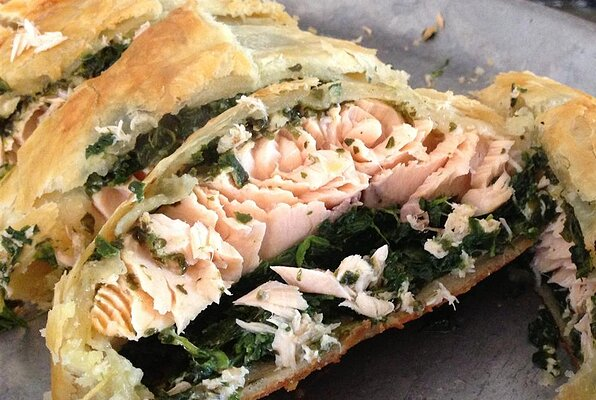

Salmon Puff Pastries

Image from allrecipes
Description
These crispy puff pastry salmon bites are a great dinner idea and re-heat amazingly well.
I usually make them with a spinach cream cheese filling in addition to the salmon, but
they are also excellent with just the salmon, a lemon wedge and a caper or two. I prefer to make
the salmon pastries as small "bite size" squares, but I have done empanada-size versions in the past and
other recipes call for one large salmon wellington-style pastry. This recipe is adapted from a tasty.co
recipe for the filling, and my mom's own home cooked bite size pastries.
Ingredients
- filet of salmon, sliced into 1"-2" squares
- 2 boxes of puff pastry (2 sheest per) per large salmon filet
- capers
- 2 tbsp fresh dill, chopped
- 2 cloves garlic, minced
- 2 small lemons, sliced into circles and then small wedges without rind
- 1/2 box (4oz) of cream cheese
- 1/2 onion, diced
- 5oz spinach
- 2-3 Eggs, whisked
- 1/4 cup panko breadcrumbs
- 2 tablespoons butter
- 2 tsp salt
- ground pepper
- 1/4 cup shredded parmesan cheese
- less than 1/2 cup of flour
Steps
- Let puff pastry sheets come to room temperature
- Pre heat oven to 425F
- Melt butter in saucepan and add onions, garlic, and salt. Cook until onion begins to brown
- Add spinach and pepper, cook until spinach is wilted
- Add panko breadcrumbs, cream cheese, and dill. Stir until combined and take off heat.
- Roll out the puff pastry on a countertop with a small bit of flour to prevent sticking
- Cut the puff pastries into squares with 3"-4" sides
- Place a salmon square on top of each puff pastry square
- Add just enough filling to cover the top of each samon square
- add 2-3 capers and a lemon wedge on top of the filling
- Fold the puff pastries up and pinch shut
- Lightly baste the top of the pastries with whisked egg
- Place the pastries on a baking sheet with non-stick spray, leaving a couple inches between each pastry
- Bake for 15-20 minutes, until the pastries turn golden brown